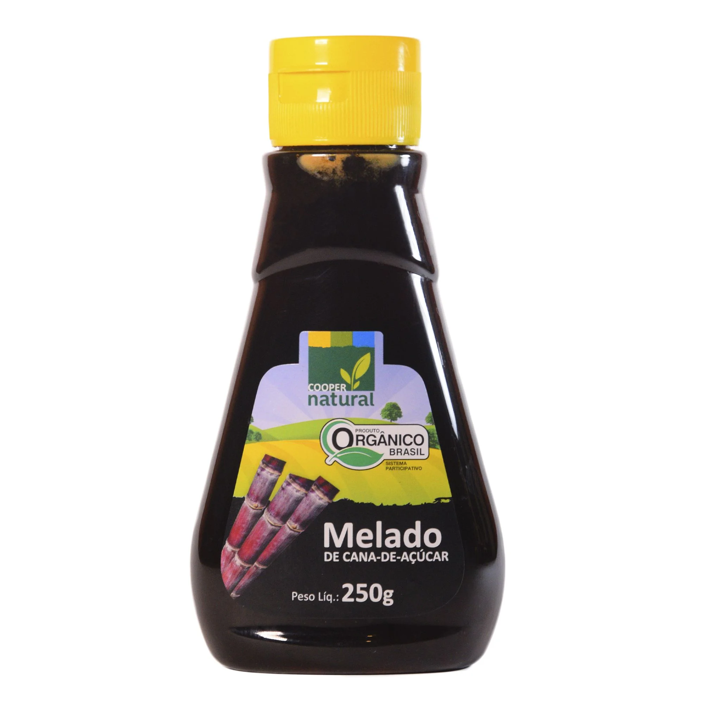
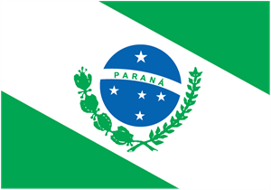
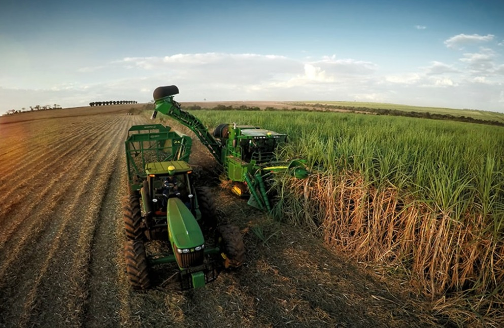

Alguns produtos derivados da cana de açúcar.

Melado de cana
Produtos de beleza
Combustível Etanol


A cana-de-açúcar é uma cultura de grande relevância no Paraná. Na safra 2025/2026, a produção alcançou aproximadamente 34 milhões de toneladas.
Reforçando a importância do estado no setor sucroenergético.

